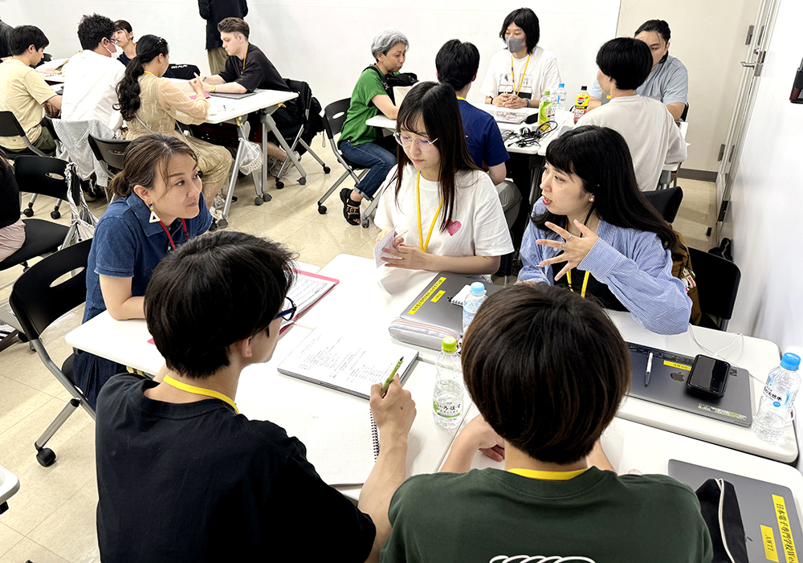
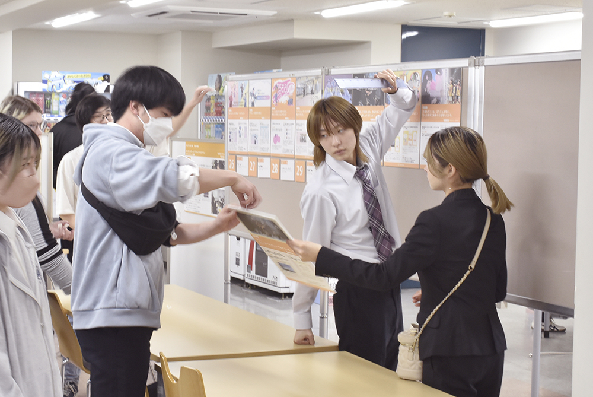
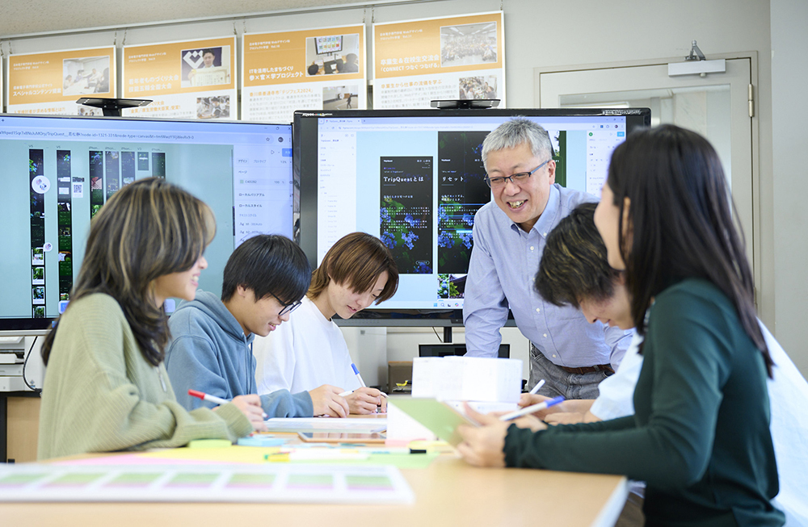

Webデザイン科 先輩インタビュー
授業を受けるためには、N2に合格する程度の日本語能力があれば何とかなると思います。
しかし、日常的な発表やコミュニケーションが関わってくる場合は、
会話力もN2レベルが望ましく、少なくともN3程度の力は必要だと私は思います。
授業に必要の
日本語レベル
日本語の重心

実際に入学して
専門学校に入学する前は、授業を聞き取る力、教科書を読み解く読解力、 そして先生のスピードについていくための書く力が最も大切だと考えていましたが。
日本人の学生たちと多く交流する中で、自分の考えをうまく伝えられなければ、 円滑なコミュニケーションは難しいということに気づきました。その経験を通して、 今まで自分が学んできた日本語の「使い方」が、実はとても限られた場面でしか 役立っていなかったのだと気づきました。

聞く力と話す力両方大事だ
言語を学ぶ上では
専門学校では専門知識だけでなく、 日常生活における日本語でのコミュニケーションも重視すべきだと感じました。
特に、日本での就職を目指す留学生にとっては、専門知識と同じくらい、あるいはそれ以上に、 日本語でのコミュニケーション能力が重要になっていると思います。
授業の難しさにつて
日本人の学生はほとんどが高校を卒業してすぐに入学しているため、学科の授業は初心者向けに基礎から始まります。 そのため、授業の内容については、むしろそれほど大きな負担を感じることはありませんでした。

結論から言えば
何かを伝えるとき、頼れるのは結局「言葉」しかありません。怖くても、恥ずかしくても、日本で暮らしていく以上、それは避けられない問題です。
留学生にとって、ここで専門知識を学ぶというよりも、学校を通じて日本社会と心のつながりを築くことの方が、より大きな意味を持つのかもしれません。
日本の人間関係や社会のルールを自分自身で体感し、日本人と関わる力を少しずつ身につけていくこと、それが、留学生にとって最大の学びのかもしれません。